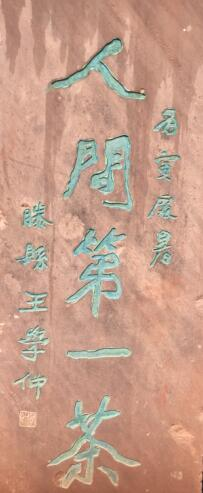
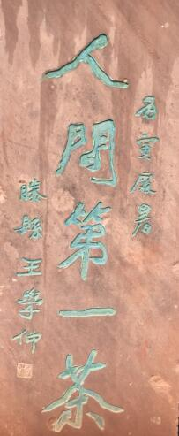

天盖寺位于蒙山五峰之下，因其史载：蒙顶山雨偏多，俗称漏天。故以“漏天之盖”而得名。寺始建于汉代，宋淳熙年间重建，占地8000平方米，寺周12株银杏参天蔽日，该银杏据传为西汉药农吴理真在蒙顶山亲手所植始植14株。天盖寺前始刻于大清雍正元年的“天下大蒙山碑记”出自于中国第一部地理志《尚书》，是蒙顶山茶文化的有力估证。天盖寺主殿茶神殿中间为时代建筑古柱大殿。西汉药农吴理真在此结庐种植仙茶。故正殿塑吴理真全身坐像，右塑茶圣羽，左塑宋朝雅州知府雷简夫。殿内陈列历代茶具和有关文史标本。游人至此，休憩品茗，听茶文化介绍，深有雅趣。
 
